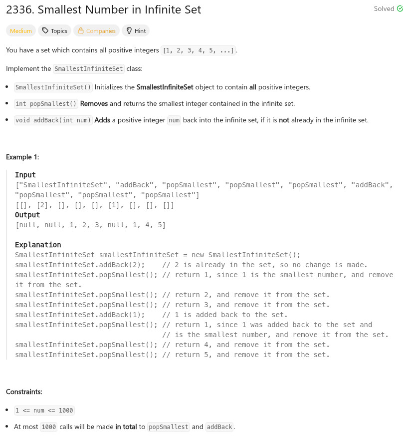

題目：

#define MAX_SIZE 1000
typedef struct {
int cnt[MAX_SIZE];
} SmallestInfiniteSet;
SmallestInfiniteSet* smallestInfiniteSetCreate()
{
int cc = 0;
SmallestInfiniteSet *r = malloc(sizeof(SmallestInfiniteSet));
for (cc = 0; cc < MAX_SIZE; cc++) {
r->cnt[cc] = 1;
}
return r;
}
int smallestInfiniteSetPopSmallest(SmallestInfiniteSet *obj)
{
int cc = 0;
for (cc = 0; cc < MAX_SIZE; cc++) {
if (obj->cnt[cc]) {
obj->cnt[cc] = 0;
return cc + 1;
}
}
return 0;
}
void smallestInfiniteSetAddBack(SmallestInfiniteSet *obj, int num)
{
obj->cnt[num - 1] = 1;
}
void smallestInfiniteSetFree(SmallestInfiniteSet *obj)
{
free(obj);
}
/**
* Your SmallestInfiniteSet struct will be instantiated and called as such:
* SmallestInfiniteSet* obj = smallestInfiniteSetCreate();
* int param_1 = smallestInfiniteSetPopSmallest(obj);
* smallestInfiniteSetAddBack(obj, num);
* smallestInfiniteSetFree(obj);
*/